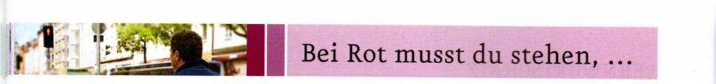
einen Helm tragen | Hunde nicht mitkommen | stehen bleiben | zu Fuß gehen
Basistraining
a 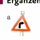 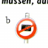 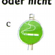 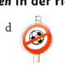 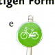 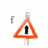
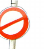
Basistraining
Das ist doch gefährlich, oder? | Das verstehe ich nicht. | Das weiß ich nicht. | Ich finde das in Ordnung.
Training: Schreiben
REGELN IM MIETSHAUS
Paco, 7. September
Mein Vermieter hat sich gestern schon wieder beschwert. Ich habe laut Musik gehört und sofort klingelt er an der Tür. Also, ich bin gegen viele Regeln in einem Haus. Und ihr? Was meint ihr? Schickt mir eure Kommentare.
Immer heißt es: Das darfst du nicht. Das ist verboten. Sei leise! Bei uns im Haus ist es ganz schlimm. Ich spiele in einer Band, aber am Mittag darf ich nicht üben. Wir dürfen nicht auf dem Balkon grillen. In der Woche darf ich keine Party feiern. Laute Musik ist natürlich auch verboten. Ich frage mich: Wo bleibt da der Spaß im Leben?
Moritz am 7. September
aWelche Regeln gibt es? Ergänzen Sie den Wortigel.
bWie finden Sie die Regeln? Ergänzen Sie Smileys. Das finde ich richtig: ☺ Das finde ich falsch: ☹
Training: Aussprache Vokale: „ä“ und „e“
Das Leben ist voller Regeln:
An der Ampel stehen,
ohne Hund in Geschäfte gehen
und im Park nur auf den Wegen.
Keinen Helm tragen,
das ist gefährlich,
aber mal ehrlich,
Fußgänger sagen:
Es geht auch ohne!
Test
gen | ben | ach | gril | pen | tra | hu | men | schie | ten | den | len | neh
Diese Regel ist in Ordnung. | Das finde ich gar nicht gut. | Das ist falsch. | Das ist ja wirklich sehr gefährlich, oder?
| Wörter | Strukturen | Kommunikation |
|---|---|---|
| 🟥 0–3 Punkte | 🟥 0–4 Punkte | 🟥 0–2 Punkte |
| 🟨 4 Punkte | 🟨 5–7 Punkte | 🟨 3 Punkte |
| 🟩 5–6 Punkte | 🟩 8–9 Punkte | 🟩 4 Punkte |
www.hueber.de/menschen/lernen
Lernwortschatz
Im Straßenverkehr
Fahrer (Auto-/Fahrrad-) der, -
Regel die, -n
Schild das, -er
Verkehr der / Straßenverkehr, der
Wiese die, -n
achten, hat geachtet
hupen, hat gehupt
parken, hat geparkt CH: parkieren, hat parkiert
schieben, hat geschoben CH: stossen (Velo), hat gestossen
stehen bleiben, ist stehen geblieben
tragen, du trägst, er trägt, hat getragen / einen Helm tragen (Helm der, -e)
langsam
erlaubt
verboten
zu Fuß
Etwas bewerten
verstehen, hat verstanden / Das verstehe ich nicht.
gefährlich
schlimm
in Ordnung
Weitere wichtige Wörter
Beispiel das, -e / zum Beispiel
Hund der, -e
Krankenhaus das, -er CH/A auch: Spital das, -e
Picknick das, -e und -s
auf-stehen, ist aufgestanden
baden, hat gebadet
dürfen, ich darf, du darfst, er darf
grillen, hat gegrillt CH: grillieren/bräteln
klingeln, hat geklingelt
müssen, ich muss, du musst, er muss
sitzen, hat gesessen A: ist gesessen
leise
für
gegen
Wiederholungsstation: Wortschatz
gl_ckl_ch | schl_nk | bl_nd | tr_r_g | k_msch | d_ck | fr_ndl_ch | h_bsch
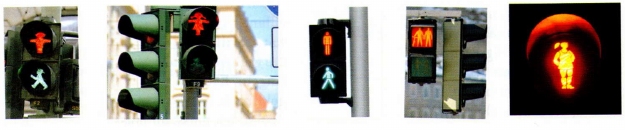
dürfen | schiebt | Fahrradfahrer | stehen bleiben | Regeln | trägt | achten
Wiederholungsstation: Grammatik
KALDEVERGESSENFAGUERKENNENLÜTAGEFALLENEDERBEKOMMENZUTERVERSTEHEN REDASBEZAHLENZUTAS
Handy benutzen | Filme anschauen | sich anschnallen | rauchen | etwas essen | Musik hören
Im Flugzeug muss man sich anschnallen, …
Selbsteinschätzung Das kann ich!
Ich kann jetzt …
Ich kenne …
… 8 Wörter zum Aussehen: L19 🟢 🟡 🔴
4 Wörter für mein Aussehen:
4 Wörter für das Aussehen von meiner Traumfrau / meinem Traummann:
… 6 Charaktereigenschaften: L19 🟢 🟡 🔴
Positiv (3x):
Negativ (3x):
… 10 Aktivitäten im Haushalt: L20 🟢 🟡 🔴
Das mache ich ganz gern. / Das finde ich nicht so schlimm (5x):
Das hasse ich (5x):
… 5 Regeln in Verkehr und Umwelt: L21 🟢 🟡 🔴
Selbsteinschätzung Das kann ich!
Ich kann auch …
Üben / Wiederholen möchte ich noch …
Rückblick
Wählen Sie eine Aufgabe zu Lektion 19
Sie/Er hat kurze/lange Haare …
Ich finde, sie/er sieht … aus und …
Meine Oma war schon immer lustig. Sie war auch total hübsch. Ich war oft im Urlaub bei ihr. Wir haben …
Rückblick
Wählen Sie eine Aufgabe zu Lektion 20
aWas macht Gert gern? Was kann er gut? Wie ist er?
Er kocht gern. …
bDie perfekte Mitbewohnerin / Der perfekte Mitbewohner. Schreiben Sie zu folgenden Punkten:
• Wie ist sie/er? • Was macht sie/er gern und gut? • Was macht sie/er oft?
Sie/Er backt am Wochenende immer Kuchen. …
Sie/Er feiert oft Partys, macht viel Unordnung. …
Wählen Sie eine Aufgabe zu Lektion 21
| Person 1 | Person 2 | Person 3 | |
|---|---|---|---|
| Was machen die Personen? Ist das erlaubt/verboten? | Der Mann fährt Fahrrad. Das ist verboten. | ||
| Wie finden Sie das? | Ich finde das nicht so schlimm. | ||
| Machen Sie das auch manchmal/nie? | Ich mache das auch fast immer. Ich fahre dann nicht so schnell und achte auf Kinder. |
| Regeln in der WG | Wie finde ich die Regel? | Das mache ich. |
|---|---|---|
| Wir dürfen in der Küche nicht rauchen. | Ich finde die Regel in Ordnung. | Aber manchmal rauche ich am Abend in der Küche. Ich mache dann das Fenster auf. |
Literatur
Teil 3: Findest du Lisa wirklich schön?
„Nach rechts!"
„Anja, bitte!"
„Ich habe es aber auf dem Stadtplan gesehen."
„Hier darf man nicht nach rechts fahren."
„Warum nimmst du dann die Ringstraße?"
„So können wir noch ein Stück von Wien sehen, bevor die Party anfängt. Schau, rechts sind der Heldenplatz und die Hofburg, und dort ist schon das Burgtheater …"
Aber Anja schaut nicht hinaus.
„Was ist los, Anja?" fragt Paul.
„Nichts."
Das ist los: Paul redet die ganze Zeit nur noch von Lisa.
„Was ist denn das?", fragt Anja.
„Naja … Blumen."
„Für wen?"
„Für Lisa natürlich."
„Gefällt dir Lisa wirklich so gut?"
„Ja, klar, ich finde sie sehr schön und auch nett. Du nicht?"
„Ich weiß nicht, ich finde sie nicht so hübsch."
„Was gefällt dir nicht an ihr?"
„Naja … ihre Haare sind zu kurz."
„Was? Zu kurz? Die sind genau richtig."
„Und die Locken passen nicht zu ihr."
„Ach was, die sind sehr schön."
Herr Rossmann bellt.
„Siehst du, Herr Rossmann findet die Haare auch gut."
„Herr Rossmann findet die Haare hässlich."
Herr Rossmann bellt.
„Herr Rossmann sagt Nein."
„Herr Rossmann sagt Ja."
Sie kommen in die Walfischgasse. Paul parkt das Auto.
„Hier ist es schön", sagt Paul.
„Eine Wohnung im ersten Bezirk – nicht schlecht …"
„Ach was …"
Herr Rossmann bellt.
„Ja, genau, gehen wir, Herr Rossmann!"
„Genau. Und vergiss deine Blumen nicht, Paul."
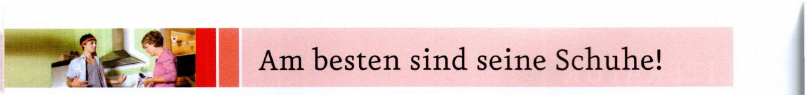
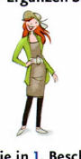
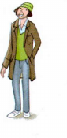
Basistraining
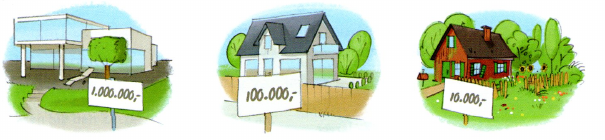
schnell | klein | klug | leicht | gut | jung | lustig | billig | gern | viel
Basistraining
ajünger cbilliger ekürzer
bkleiner dhübscher fdicker
Hallo …,
vielen Dank für Deine E-Mail. Du kommst mich in Wien besuchen! Das ist klasse!
Möchtest Du drei Tage in Wien bleiben oder lieber einen Ausflug an den Neusiedler See machen? Vielleicht kann ich das Auto von meinen Eltern haben.
Was möchtest Du am liebsten machen? In die Oper oder ins Theater gehen? Im Hotel Sacher Kuchen essen? In unseren großen Freizeitpark (er heißt Prater) fahren?
Bitte schreib mir Deine Wünsche.
Ich freue mich sehr auf Deinen Besuch!!!
Viele Grüße
Johanna
Schreiben Sie eine E-Mail zu folgenden Punkten.
• lieber in Wien bleiben • Oper – Theater: wahnsinnig langweilig finden – am liebsten ins Museum gehen • natürlich gern Kuchen im Hotel Sacher essen • den Prater – total lustig finden
Hallo Johanna,
das sind ja viele gute Ideen! Drei Tage sind natürlich sehr kurz. Ich möchte lieber in Wien
Ich freue mich sehr!
Bis bald
Dein/e
Training: Lesen
aWas passt zusammen? Ordnen Sie zu.
morgen | nach | Nachmittag | bis | ohne | keine | nie | manchmal
bLesen Sie den Zettel und kreuzen Sie an. Im Bekleidungsgeschäft am Fenster
Räumungsverkauf
50 % auf alle Jacken, Hemden, Blusen und Kleider
Nur noch bis zum 31. März
aIm Supermarkt an der Tür
Inventur
Am Dienstag haben wir Inventur.
Wir haben daher leider ab 15.00 Uhr geschlossen.
Am Mittwochmorgen können Sie wieder wie gewohnt bei uns einkaufen.
Training: Aussprache unbetontes „e“
aMeine Schuhe sind dunkelbraun.
bIch habe noch nie einen Gürtel getragen.
cDie Bluse hier gefällt mir am besten.
dAlles ist golden: seine Schuhe, seine Hose, sein Hemd und sein Mantel.
Test
wie langweilig | wahnsinnig teuer | total schön | am besten | fast täglich | viel praktischer
| Wörter | Strukturen | Kommunikation |
|---|---|---|
| 🟥 0–4 Punkte | 🟥 0–6 Punkte | 🟥 0–3 Punkte |
| 🟨 5–6 Punkte | 🟨 7–9 Punkte | 🟨 4 Punkte |
| 🟩 7–8 Punkte | 🟩 10–12 Punkte | 🟩 5–6 Punkte |
www.hueber.de/menschen/lernen
Lernwortschatz
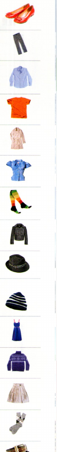
Kleidung
Kleidung die
Bluse die, -n
Jacke die, -n
Gürtel der, -
Hemd das, -en
Hose die, -n
Hut der, -e A: Haube die, -n / CH: Kappe die, -n
Kleid das, -er
Mantel der, -
Mütze die, -n
Pullover der, -
Rock der, -e CH: auch: der Jupe, -s
Schuh der, -e
Socke die, -n
Strumpf der, -e CH: Strumpfhose die, -n oder Kniesocke die, -n
Strumpfhose die, -n
T-Shirt das, -s
Weitere wichtige Wörter
Text der, -e
an-haben, hat angehabt
an-ziehen, hat angezogen
erzählen, hat erzählt
klug
als / schöner als
(genau)so wie / (genau)so schön wie
zuletzt
zurzeit
Klasse! A/CH: Super!
Toll!
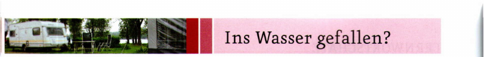
Die Sonne scheint. | Es wird bald sehr windig. | Es ist bewölkt. | Es ist kühl. | Es ist schön warm. | Es regnet schon lange. | Es wird kälter. | Man sieht nicht viele Wolken. | Es gibt bald ein Gewitter.
| Nomen | Adjektive | Verben |
|---|---|---|
| die Sonne | scheinen | |
| der Wind | windig | / |
Basistraining
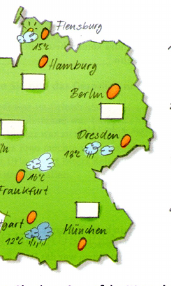
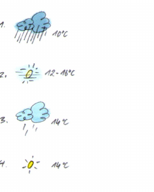
aWie ist das Wetter? Machen Sie Notizen.
bErzählen Sie. Ihre Partnerin / Ihr Partner rät: Wo sind Sie?
Hier ist das Wetter nicht so toll. Es ist neblig und nicht besonders warm. Wir haben … Grad. … Wo bin ich? – Bist du in …?
arbeitslos | wolkenlos | farblos
Basistraining
er hat gestern lange gefeiert | es schneit zu viel | ihr Fahrrad ist kaputt | sie fahren morgen in den Urlaub
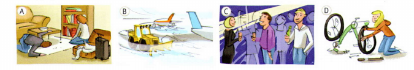
Training: Hören
Sehen Sie das Bild an. Was meinen Sie? Was passiert hier? Was sagen die Personen?
Familie | Arbeit | Urlaub | Krankheit | Haushalt | Wetter …
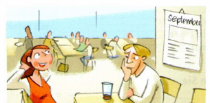
„Der Mann sieht krank aus. Vielleicht …"
„Ich glaube, die Frau war im Urlaub!"
Tipp: Sie finden das Hören besonders schwierig? Überlegen Sie vor dem Hören: Was ist die Situation? Wo sind die Personen? Was sagen die Personen vielleicht?
Training: Aussprache Vokal „ö"
aWetter · Wort → macht: Wetterwörter
bMädchen · Brötchen → Mädchen möchten Brötchen.
cFan · Föhn → Ein Föhn vom Fan
dKellner · Köln → Ein Kölner Kellner ist ein Kellner aus Köln.
esonnig · bewölkt → im Norden sonnig, im Osten bewölkt
Test
Wolken | scheint | Sturm | neblig | Grad | Gewitter | regnet | Himmel | warm
kosten- | wolken- | arbeits- | fehler- | farb-
ich arbeite am Wochenende | der Schnee ist traumhaft | ich backe gern | deine Partys sind immer lustig | ich schreibe am Montag eine Prüfung | ich habe Geburtstag
Lernwortschatz
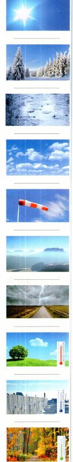
Wetter
Wetter das
Gewitter das, -
Grad das, -e
Nebel der
Regen der
Schnee der
Sonne die, -n
Sturm der, -e
Wind der, -e
Wolke die, -n
regnen, hat geregnet
schneien, hat geschneit
scheinen, hat geschienen
kühl
neblig
sonnig
warm
windig
Himmelsrichtungen
Himmelsrichtung die, -en
Norden der
Süden der
Osten der
Westen der
Weitere wichtige Wörter
Dach das, -er
Frühjahr das, -e
Glas das, -er
Glück das
Himmel der
Laune die, -n
Reiseführer der, -
Traum der, -e
Tipp: Suchen Sie Wortfamilien. Wolke - bewölkt - wolkenlos · Reise - Reiseführer - reisen - Reisebüro
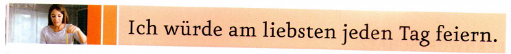
Bescheid | Fluss | geben | Getränke | grillen | vergessen | Wald | Wetter | wunderbar | zufrieden
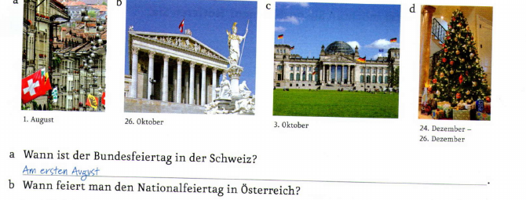
Basistraining
ab | am | am | bis | bis | für | nach | im | in | um | vom | von
a Hören Sie und nummerieren Sie.
b Ergänzen Sie aus a und vergleichen Sie.
Basistraining
im Wald wohnen | in den Süden fahren | jeden Tag grillen | viel Geld verdienen
Training: Schreiben
Viele Grüße | Liebe Studentinnen und Studenten | Bielefeld, 15. Juni 20..
Tipp: Sie möchten einen Brief schreiben. Was ist besonders wichtig? Vergessen Sie nicht das Datum, die Anrede und den Gruß. Vor dem Schreiben: Wie gut kennen Sie den Adressaten? Wollen Sie du oder Sie sagen? Schreiben Sie zu jedem Punkt ein bis zwei Sätze.
– Danken Sie für die Einladung.
– Sagen Sie: Sie kommen gern zu dem Fest.
– Fragen Sie: Sollen Sie etwas mitbringen?
Musterlösung: Lieber Herr Weller, vielen Dank für die Einladung. Ich komme gern zu dem Fest am 28. Juli. Soll ich etwas mitbringen? Viele Grüße …
Training: Aussprache Neueinsatz
a April – im | April b Ostern – zu | Ostern c Abend – heute | Abend
d Abschlussprüfung – meine | Abschlussprüfung e Uhr – acht | Uhr f Ulm – in | Ulm
Hören Sie und vergleichen Sie. ▶ 2 46
In Ulm und um Ulm und um Ulm herum.
Sprechen Sie: zuerst langsam und dann immer schneller.
Test
Lernwortschatz
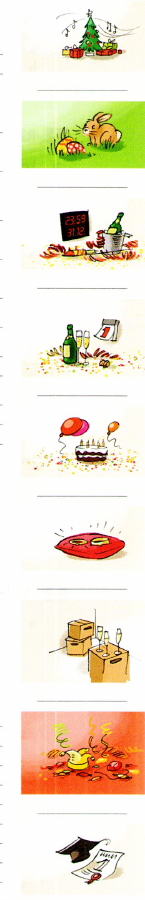
Feste und Feiern
Fest das, -e
Feier die, -n
Ostern das
A: Ostern die (Pl)
Weihnachten das
A: Weihnachten die (Pl)
bestehen, hat bestanden
gratulieren, hat gratuliert
schenken, hat geschenkt
Glückwünsche
Glückwunsch der, -e
Alles Gute!
Frohe Weihnachten!
Gutes / Frohes neues Jahr!
Gut gemacht!
Herzlichen Glückwunsch!
Weitere wichtige Wörter
Bekannte der/die, -n
CD die, -s
Getränk das, -e
Ticket das, -s
A: Fahrkarte die, -n
CH: Billet das, -s
Reise die, -n
Verwandte der/die, -n
antworten, hat geantwortet
gewinnen, hat gewonnen
um-ziehen, ist umgezogen
zufrieden
draußen
gemeinsam
hoffentlich
endlich
schade
Tipp: Notieren Sie wichtige Termine auf Deutsch. 12.04. 70. Geburtstag Opa · 25.07. Felix zieht um · 22.12. Weihnachtsfeier in der Firma
Wiederholungsstation: Wortschatz
a Lesen Sie die Sätze und ergänzen Sie die Tabelle. Zu drei Feldern gibt es keine Information.
1 Carla hat am 14. November Geburtstag. · 2 Hannah macht dieses Jahr Urlaub in Schweden. Sie hat schon einen Reiseführer gekauft. · 3 Julia liebt Strumpfhosen. Sie trägt sie immer, auch im Sommer. · 4 Beate wohnt seit Januar in der Schweiz, in Bern. Sie hat am 5. Februar Geburtstag. · 5 Eine Frau zieht nicht gern Hosen an. Sie lebt in Hamburg und macht Urlaub in Dänemark. · 6 Eine Frau macht Urlaub in Frankreich. Sie ist elegant und trägt gerne einen Hut. · 7 Julia wohnt in Rom. · 8 Eine Frau hat am 9. April Geburtstag. Es ist nicht Hannah. · 9 Eine Frau wohnt in Wien. Sie trägt nur Hosen.
b Beantworten Sie die Fragen.
Wiederholungsstation: Grammatik
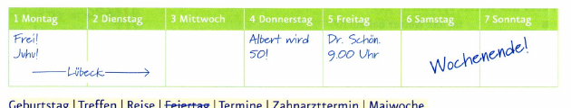
Geburtstag | Treffen | Reise | Feiertag | Termine | Zahnarzttermin | Maiwoche
im Meer baden | tanzen | in Urlaub fahren | am See grillen
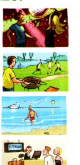
Selbsteinschätzung Das kann ich!
Ich kann jetzt …
Ich kenne …
… 8 Kleidungsstücke: L22 🟢 🟡 🔴
Diese Kleidungsstücke habe ich oft an/mag ich:
Diese Kleidungsstücke habe ich nie an/mag ich nicht so:
… 6 Wörter zum Thema Wetter: L23 🟢 🟡 🔴
So mag ich das Wetter:
So mag ich das Wetter nicht:
… die 4 Himmelsrichtungen: L23 🟢 🟡 🔴
… 5 Wörter zum Thema Feste und Feiern: L24 🟢 🟡 🔴
Feste:
Verben: gra, sch, fei
Selbsteinschätzung Das kann ich!
Ich kann auch …
Üben / Wiederholen möchte ich noch …
Rückblick
Wählen Sie eine Aufgabe zu Lektion 22
Ich finde dein T-Shirt … | Super / Nicht so gut finde ich … | …
Mein/e Lieblingspullover / Lieblings… ist … Jahre alt. | Ich habe ihn/sie/es … gekauft. / Er/Sie/Es ist ein Geschenk von … | Ich finde ihn/sie/es … | …
Rückblick
Wählen Sie eine Aufgabe zu Lektion 23
Wo waren Sie?
Was waren die Probleme? /
Was ist passiert?
Wählen Sie eine Aufgabe zu Lektion 24
– Was haben Sie gefeiert?
– Wann haben Sie gefeiert?
– Wo haben Sie gefeiert?
– Wer hat mitgefeiert?
– Was haben Sie gemacht?
– Was hat Ihnen besonders gefallen / nicht gefallen?
Literatur
Wiedersehen in Wien
Teil 4: Ein schöner Abend, oder?
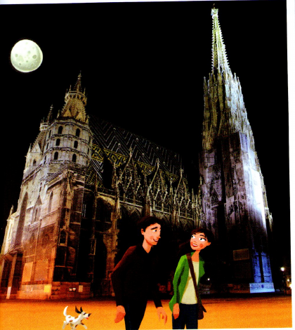
Paul und Anja klingeln. Lisa öffnet die Tür.
„Hallo Paul, hallo Anja! Kommt rein. Es sind schon viele Leute da. Na, und wer bist du?"
Herr Rossmann bellt.
„Das ist Herr Rossmann."
„Hallo Herr Rossmann, komm auch rein!"
„Alles Gute zum Geburtstag, Lisa!", sagt Paul und gibt ihr die Blumen.
„Oh, danke, die sind schön. Das ist sehr nett von dir, Paul." Sie lächelt. „Ich zeige euch gleich mal die Wohnung."
„Wow, die ist wirklich super", sagt Anja. „Und so groß."
„Ich brauche auch eine große Wohnung", sagt Lisa. „Ich möchte gern bald eine Familie haben. Ich liebe Kinder."
„Kinder?", fragt Paul. „Bist du …?"
„Nein, noch nicht. Aber mein Freund Franz und ich wollen bald heiraten."
„Oh …"
Paul und Anja setzen sich auf ein Sofa und trinken etwas. Sie hören der Musik zu und sehen die anderen Leute an.
Dann sagt Anja: „Lisa hat einen Freund. Bist du traurig?"
„Nein." – „Doch."
„O.K., ein bisschen vielleicht", sagt Paul.
„Weißt du was? Gehen wir spazieren." – „Gute Idee!"
Es ist warm, der Himmel ist klar, der Mond scheint. Sie gehen an der Oper vorbei und dann durch die Kärntner Straße.
„Ist der Stephansdom nicht schön in der Nacht?", fragt Anja.
„Oh ja, sehr schön."
„Bist du noch traurig?" – „Nein, eigentlich nicht." – „Wirklich?" – „Ja, wirklich."
Paul sieht Anja an.
„Was war nur los mit mir?", denkt er. „Warum habe ich Lisa so super gefunden? Sie ist nett, ja, und sie ist auch hübsch. Aber eigentlich … finde ich Anja viel toller."
Herr Rossmann bellt.
„Ja, genau, Herr Rossmann, das findest du auch, oder?"
„Was findet Herr Rossmann auch?", fragt Anja.
„Oh, nichts …" Paul wird rot.
„Ein schöner Abend, oder?", sagt er und lächelt Anja an.
Sie lächelt zurück.
„Ja, wirklich ein schöner Abend …"
Grammatikübersicht
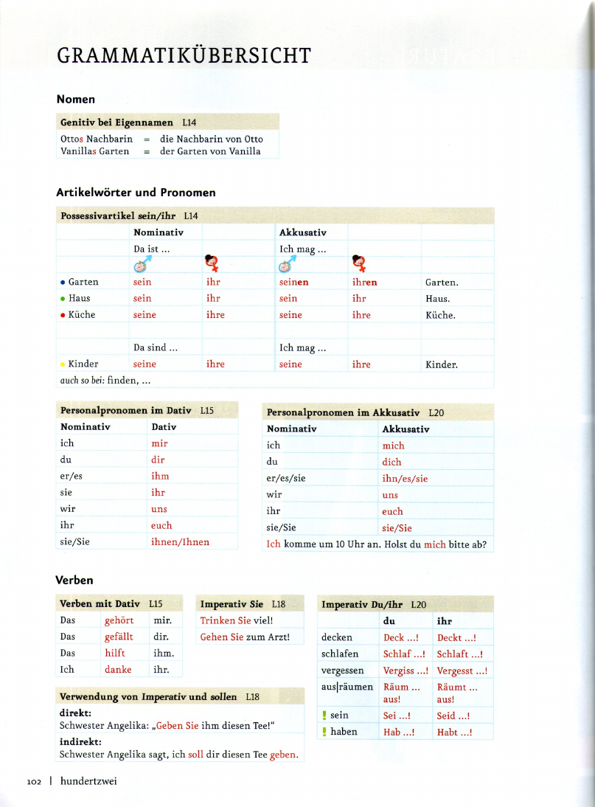
Grammatikübersicht
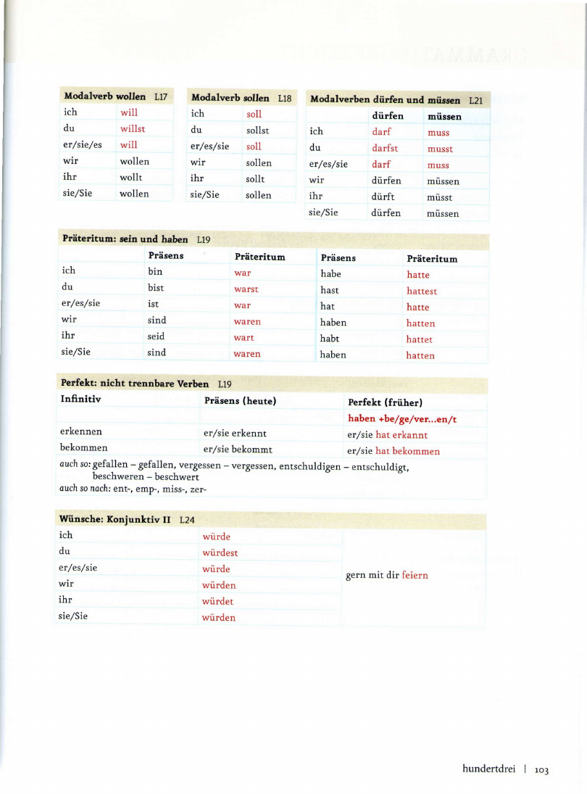
Grammatikübersicht
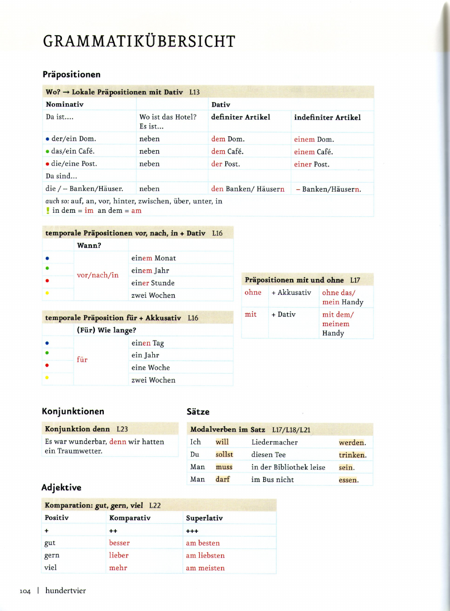
Grammatikübersicht
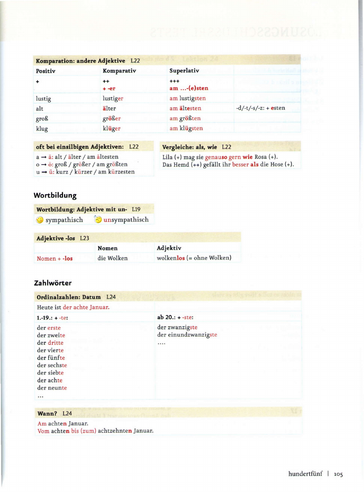